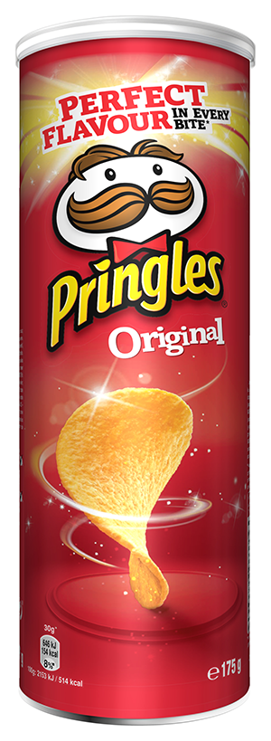
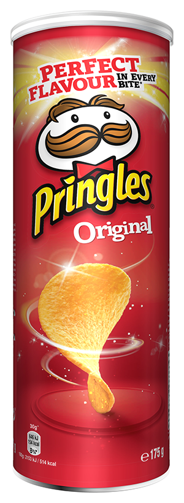

Pringles Original
Hiermee is het allemaal begonnen. De smaak in de iconische hyperbolische paraboloïde vorm (Google maar even, echt ontzettend cool) die je perfect in de unieke can kunt stapelen. Zo veel geschiedenis: van nieuwkomer via hot item naar 'fun to eat', het is gewoon logisch dat 'you don't just eat 'em'!